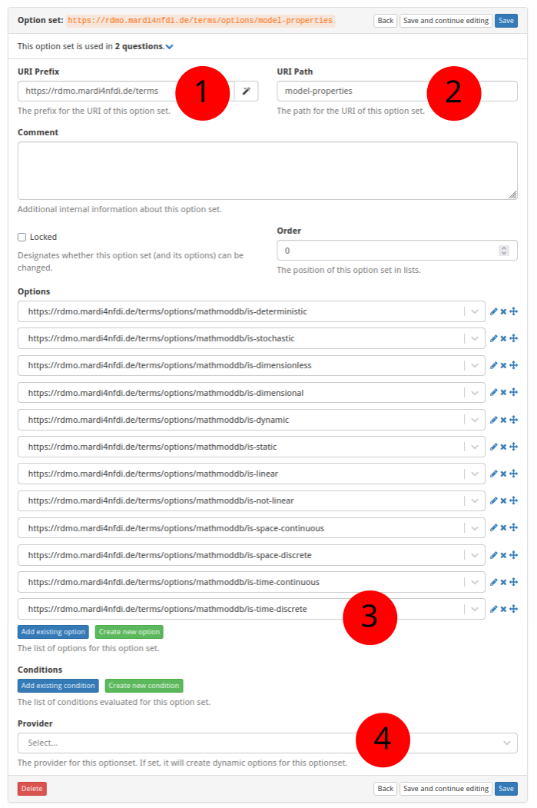

How to Create a New Optionset
The screenshot below (taken in RDMO 2.4.4) shows the form for creating a new optionset. The numbered fields are explained in the sections that follow.

① URI prefix
The base URI that scopes all items belonging to a particular source. For MaRDMO-specific items this is:
https://rdmo.mardi4nfdi.de/terms
② URI path
A short name that identifies the optionset. This becomes part of the optionset's full URI. Example:
model-properties
The full URI of the optionset is therefore:
https://rdmo.mardi4nfdi.de/terms/options/model-properties
③ Options
Assign existing options to this optionset, or create new ones directly from this form. See How to Create a New Option for details on adding individual options.
④ Provider
Optionally attach an external optionset provider to supply options dynamically — for example, via an autocomplete search against the MaRDI Portal or Wikidata. A provider can be used alongside manually defined static options or on its own. See Dynamic Optionset Providers for a description of the available provider tiers and how they work.